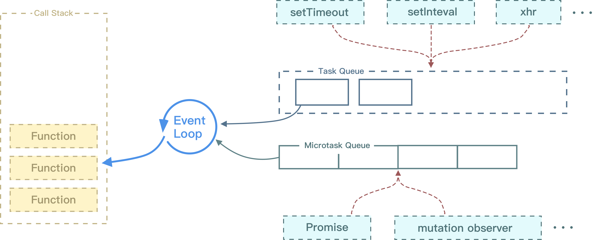

众所周知，JavaScript 是单线程的。同一时间任务肯定又有很多，而任务又分为同步任务和异步任务，在 JavaScript 里面，到底是怎么协调执行这些任务的呢？带着这个疑问，我打算好好的把这方面的知识根据自己的理解总结一下。
# 执行栈
任务分为同步任务和异步任务两种。首先最简单的情况，就是没有异步任务，只有同步任务的情况，这个时候，就要引出执行栈这个概念。来看下面这么一段代码。
function myFunct(){ | |
throw new Error('error'); | |
} | |
function myFun2(){ | |
myFunct(); | |
} | |
myFun2(); |
结果是：

执行栈是一个存储函数调用的栈结构，它遵循先进后出的原则。
当开始执行 js 代码的时候，首先会执行一个主函数，然后执行我们的代码，后执行的函数先弹出栈，从上图结果中也可以看出。
所有同步任务是在主线程上执行，并且形成一个执行栈的。
# 任务队列
任务队列，顾名思义，就是一个事件的队列，每完成一项异步任务，就会向任务队列中添加一个事件，表示这个异步任务可以进入执行栈执行了（执行异步任务的回调函数）。
当同步任务被执行完毕，主线程空闲下来的时候，系统就会执行任务队列中的任务，即异步任务。
所以，加入任务队列不等于马上就能执行，还要看执行栈是否空。
setTimeout(()=>{ | |
console.log('1'); | |
},0); | |
console.log('2'); |
上面的代码并不会先输出 1，而是会先输出 2。
虽然 setTimeout 定时器定时为 0ms，但是计时完成后任务只是被加入的任务队列，JavaScript 仍然会先执行完主线程中的同步任务，只有当同步任务全部执行完毕后，才会去执行任务队列中的任务。
同时也要注意，如果邻近的定时器设置 0ms、1ms 之类的非常小的延迟时间时，还真不好说谁先执行，可能会得到预想之外的结果，需要注意。
总之，异步执行的机制如下：
- 所有同步任务都在主线程上执行，形成一个执行栈
- 主线程之外，有一个任务队列，只要异步任务有了运行结果，就在任务队列之中放一个任务。
- 一旦执行栈中的同步任务执行完毕，系统就会读取任务队列中的任务并执行。
- 不断重复前三步。
# 执行栈 + 任务队列的结合
来看这么一段代码。
console.log('start'); | |
new Promise((resolve,reject) => { | |
console.log('first Promise constructor'); | |
resolve(); | |
}).then(() => { | |
console.log('first promise then'); | |
return new Promise((resolve,reject)=>{ | |
console.log('second Promise constructor'); | |
resolve(); | |
}).then(()=>{ | |
console.log('second Promise then'); | |
}); | |
}).then(() => { | |
console.log('last promise then'); | |
}) | |
console.log('end'); |
根据 Promise 的特性，Promise 构造函数是同步的，而 then 的执行是异步的。
- 首先输出 start。
- 然后执行 Promise 的构造函数，输出 first Promise constructor，并将第一个 promise 的 then 函数处理逻辑放入任务队列
- 然后输出 end
- 执行栈空，读取任务队列，输出 first promise then 和 second promise constructor，并将 then 内构造的 promise 的 then 方法放入任务队列。
- 输出 second promise then
- 最后输出 last promise then
# 事件循环
主线程从任务队列中读取事件，这个过程是循环不断的，这个机制又称为事件循环（Event Loop），每一次事件循环操作，都称为 tick。
# 异步任务分类
实际上，异步任务又分为宏任务和微任务，而且他们所在的任务队列其实是不同的。
# 宏任务（macrotask）
宏任务一般是由宿主（node、或者是浏览器）发起的，它包含：
- script（整体代码）
- setTimeout、setInterval
- UI 渲染
- I/O
- postMessage 嘛，MessageChannel
- 事件
# 微任务（microtask）
微任务一般由 JavaScript 自身发起，它包含：
- Promise
- MutationObserver
- Object.observe（已废弃）
- process.nextTick(node.js)
# 优先级
微任务的优先级比宏任务要高。但宏任务才会触发新一轮 tick。
# 事件循环模型

如上图所示。
在每一次 Event Loop 当中的任务如下：
- 执行一个宏任务（栈中没有就从任务队列中获取）
- 执行过程中遇到微任务，将它添加到微任务的任务队列中。
- 宏任务执行完毕后，将会检查是否存在微任务，有则按顺序执行当前微任务队列中所有微任务
- 若宿主为浏览器，可能会渲染页面
- 开启下一轮 tick
# 例子
console.log('start'); | |
const foo = () => { | |
return new Promise((resolve,reject) => { | |
console.log('first promise constructor'); | |
let promise1 = new Promise((resolve,reject) => { | |
console.log('second promise constructor'); | |
setTimeout(()=>{ | |
console.log('setTimeout here') | |
resolve(); | |
},0); | |
resolve('promise1'); | |
}); | |
resolve('promise0'); | |
promise1.then(arg => { | |
console.log(arg); | |
}); | |
}); | |
} | |
foo().then(arg => { | |
console.log(arg); | |
}); | |
console.log('end'); |
- 首先执行 start，接着同步输出 first promise constructor、second promise constructor，setTimeout 回调进入任务队列（宏任务），promise1 的完成处理函数进入任务队列（微任务），promise0（匿名 promise）的完成处理函数进入微任务队列
- 虽然 settimeout 宏任务先进入任务队列，但微任务优先度更高，先输出 promise1 的结果，在输出 promise0
- 最后输出 setTimeout here。
# 总结
总之，JavaScript 是单线程的，有着执行栈、任务队列、同步任务、异步任务的概念。
- 同步任务都在主线程上执行，形成一个执行栈。
- 主线程之外有一个任务队列，异步任务有了运行结果都会放到对应的任务队列之中
- 执行栈中的所有同步任务执行完毕之后，读取任务队列
- 会优先执行微任务队列中的所有微任务，执行完毕后渲染。
- 然后执行宏任务。